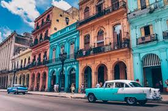
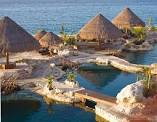

Miami, Florida, USA
Miami, officially the City of Miami, is the
cultural, economic and financial center of
South Florida. Miami is the seat of Miami-Dade
County, the most populous county in Florida.
The city covers an area of about 56.6 square
miles (147 km2), between the Everglades to the
west and Biscayne Bay on the east; with a
2018 estimated population of 470,914,
Miami is the sixth most densely populated
major city in the United States.
Key West, Florida, USA

Key West (Spanish: Cayo Hueso) is
an island and city in the Straits
of Florida on the North American
continent. The city lies at the
southernmost end of U.S. Route 1,
the longest north-south road in
the United States. Key West is the
southernmost city in the
contiguous United States and the
westernmost island connected by
highway in the Florida Keys. The
island is about 4 miles (6.4 km)
long and 1 mile (1.6 km) wide, with
a total land mass of 4.2 square miles
(11 km2).[5] Duval Street, its main
street, is 1.1 miles (1.8 km) in
length in its 14-block-long crossing
the Gulf of Mexico to the Straits of
Florida and the Atlantic Ocean. Key West
is about 95 miles (153 km) north of Cuba
at their closest points.[6][7]
Havana, Cuba

Havana (/həˈvænə/; Spanish: La
Habana [la aˈβana] (About this
soundlisten)) is the capital city,
largest city, province, major port,
and leading commercial center of Cuba.
[4] The city has a population of 2.1
million inhabitants,[2][4] and it spans
a total of 781.58 km2 (301.77 sq mi) –
making it the largest city by area, the most
populous city, and the fourth largest
metropolitan area in the Caribbean
region.[2][5]
Cozumel, Mexico

Cozumel (Spanish pronunciation: [kosu'mel],
Yucatec Maya: Kùutsmil) is an island and
municipality in the Caribbean Sea off the
eastern coast of Mexico's Yucatán
Peninsula, opposite Playa del Carmen.
It is separated from mainland by Cozumel
Channel and is close to the Yucatán Channel.
The municipality is part of the state of
Quintana Roo, Mexico.